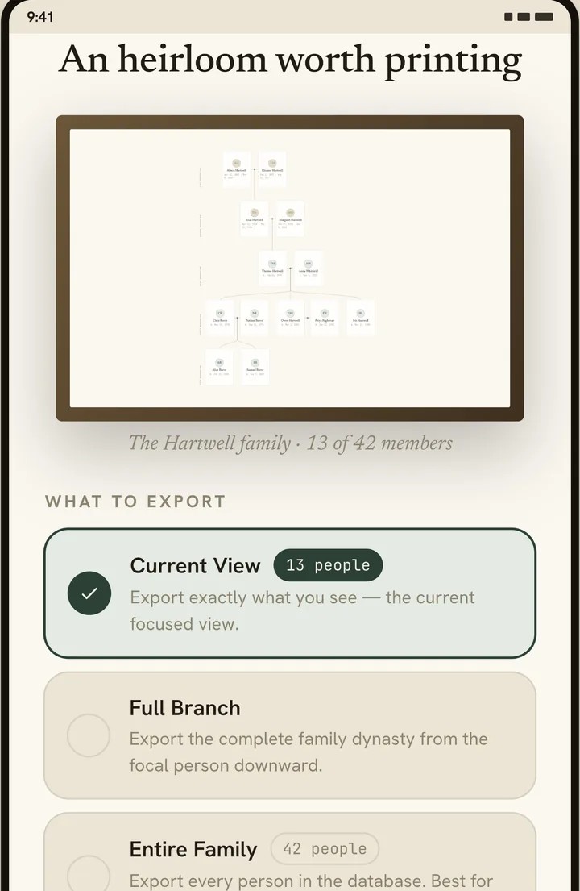

How to print your family tree
A family tree is an awkward thing to print. It grows sideways — each new generation of cousins makes it wider, not taller — and paper does not. That mismatch is why so many printed trees come out as a grey smudge of names nobody can read.
This is how to get one that is actually worth framing, from a phone, for nothing.
First decide how much tree you want
Printing everyone is rarely what people actually want. A tree of three hundred people on one sheet is a diagram; a tree of twenty is a portrait of a family. Kinestry offers three scopes:
| Scope | What it prints |
|---|---|
| Current View | Exactly what is on screen — the focused view you have already framed. |
| Full Branch | One person and every descendant below them. The usual choice for a gift: start at a grandparent. |
| Entire Family | Every person in the tree. Best as an archive copy rather than something to hang. |

If you are printing for someone else, Full Branch starting at their oldest known ancestor is almost always the right answer. It tells a story with a beginning.
Then pick a size that fits
This is the decision that ruins most printed trees, and it is worth understanding properly. A fixed paper size never changes — so the tree has to shrink until it fits. A4 is 210 × 297 mm whether your family has eight people in it or eighty. Eighty people on A4 means eighty very small cards.
| Size | Dimensions | Use it when |
|---|---|---|
| Full Size | One page, shaped to the tree | You want nothing shrunk. The page grows to fit the family, and stays crisp at any zoom. Take this to a print shop and they can produce it at whatever scale you ask. |
| A0 | 841 × 1189 mm | A large family, destined for a wall. Print shop only. |
| A1 | 594 × 841 mm | The usual poster size. Big enough for a few dozen people to stay readable. Print shop only. |
| A3 | 297 × 420 mm | A modest family, or a reference sheet for a folder. |
| A4 | 210 × 297 mm | A small family, or a copy to post. Fits any home printer. |
| Letter | 8.5 × 11 in | Same as A4, for North America. |

Which one should you actually choose?
- Hanging it on a wall: A1, or A0 for a large family.
- Letting a print shop decide: Full Size. Nothing is scaled down before they see it, so they have the most to work with.
- Home printer: A4 or Letter, and keep the scope small — one branch, not the whole family.
Portrait or landscape
Family trees are nearly always wider than they are tall, because each generation spreads sideways. Landscape wastes less paper for most trees. The exception is a long, narrow line of descent — one child per generation for six generations — which suits portrait.
If you are not sure, try both. An export takes seconds and costs nothing.
Dates on, or dates off
There is a switch for Include dates & lifespans. Turning it off buys you space and a calmer sheet; turning it on makes the print useful as a record rather than a decoration. For a wall, many people prefer it off. For anything going into a family archive, leave it on.
PDF or PNG
Choose PDF for anything you will print. The names stay as text, so they stay sharp at whatever size the printer produces. A PNG is a fixed grid of pixels — enlarge it and the edges soften.
PNG earns its place when you are sending the tree to someone to look at: a messaging app, a group chat, a social post. It opens instantly everywhere and needs no reader.
Getting it printed
Export hands the file straight to your phone's share sheet, so it can go wherever you need it: email to a print shop, into a cloud drive, or to a messaging app.
Two things worth checking before you pay for a large print:
- Open the PDF and zoom in on the smallest names. What looks fine on a phone can be unreadable at the size you ordered.
- Ask the shop not to "fit to page" if you have exported at a specific size. Scaling it again is how a carefully sized A1 ends up with white margins and smaller type.
Non-Latin names
Arabic, Hebrew, Chinese, Korean, Devanagari, Bengali, Tamil, Telugu, Malayalam, Sinhala, Khmer, Armenian, Georgian, Thai, Greek and Cyrillic names all print correctly, with the right script rather than empty boxes. Arabic names print in the correct right-to-left order.
One honest limitation: Arabic letters currently print in their isolated forms rather than joined. The name is correct and readable, but it does not connect the way handwriting does. That is a limitation of the PDF engine underneath, and it is being worked on.
What this costs
Nothing. Kinestry is free, has no subscription, no account, and holds no export behind a payment. Your tree is not uploaded anywhere to be rendered — the PDF is built on your own phone, which is also why it works with no signal at all.